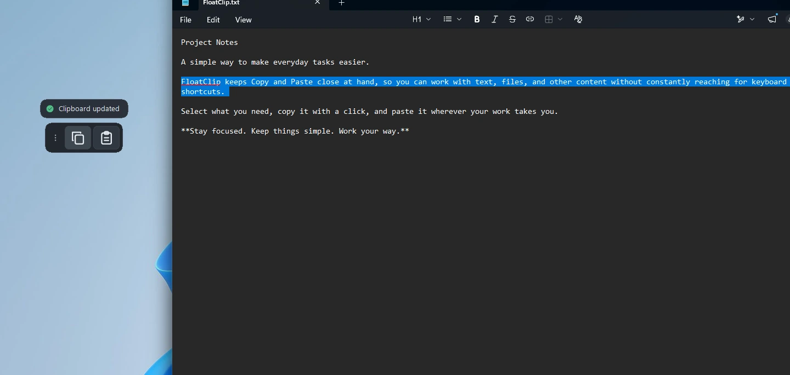
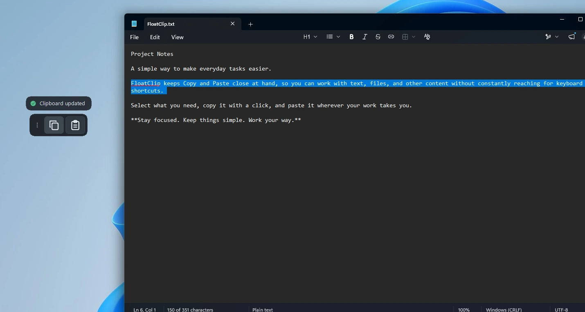
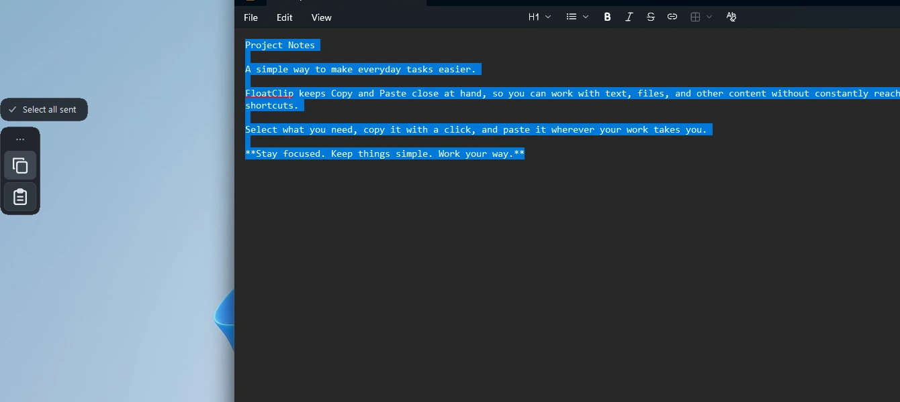
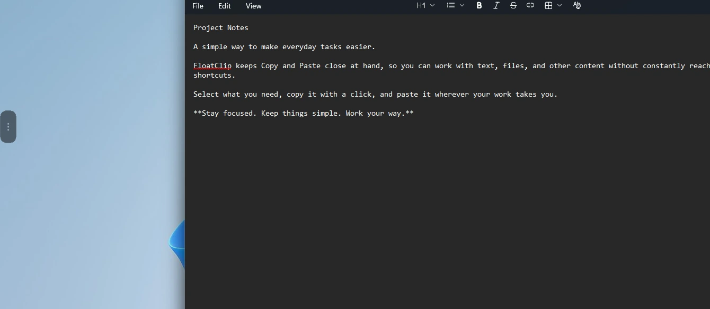
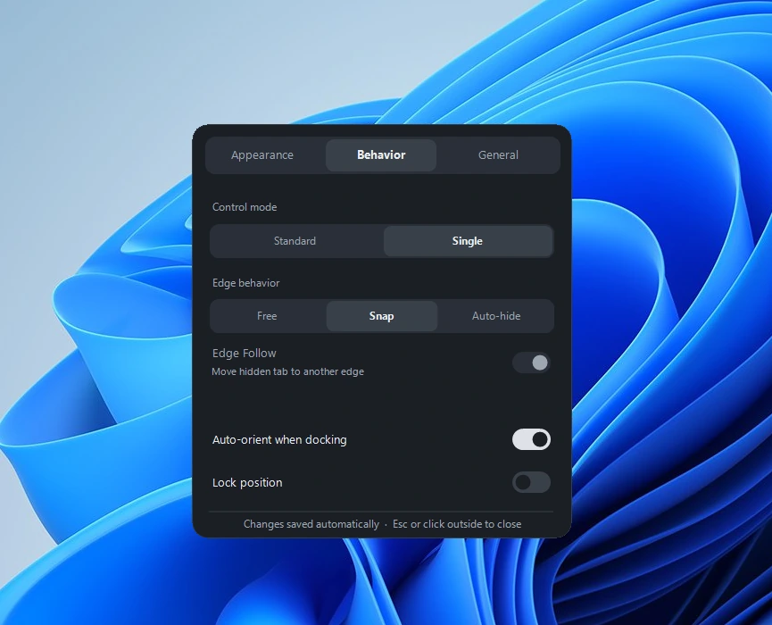
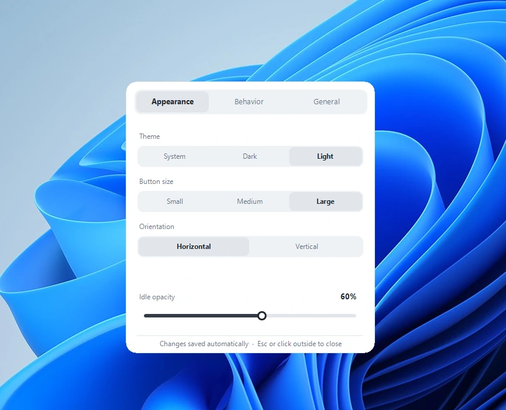
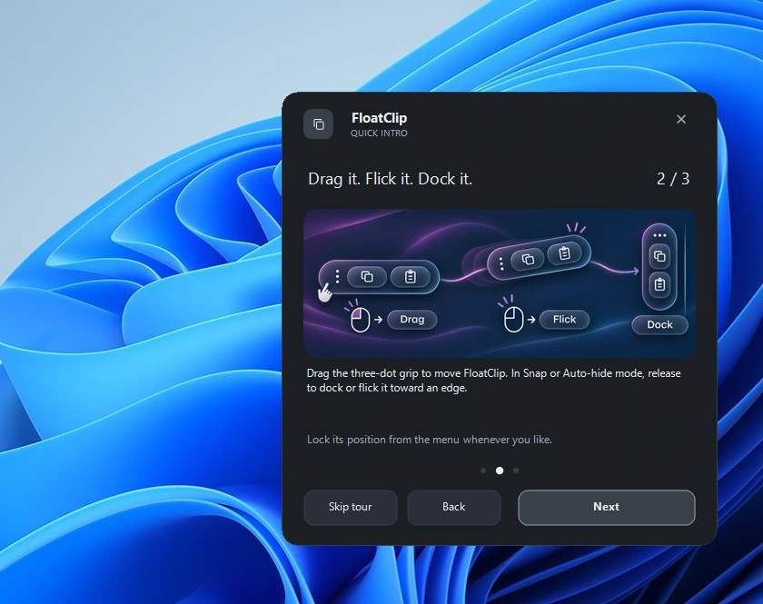

01 / Everyday actions
Copy & Paste, close at hand
Keep the familiar actions near your work, with additional click gestures for Select All and Enter.

FloatClip puts a compact floating toolbar within easy reach. Copy, paste, move, dock, or let it hide along the edge of your screen.
Microsoft Store release in preparation · No download is offered yet

The essentials
Every screenshot below is taken from the real app. No recreated interface or imaginary controls.
Keep the familiar actions near your work, with additional click gestures for Select All and Enter.

Drag your toolbar, snap it to the edge, or use a compact hidden tab when Auto-hide is enabled.


Choose your theme, size, control mode, opacity, orientation and edge behavior.


Discover the gestures, docking and Auto-hide options in a short, three-step walkthrough.

Local by design
FloatClip has no developer-operated account, cloud synchronization, advertisements, analytics or telemetry. It sends Windows shortcuts to the active app and does not maintain its own clipboard history.
Slovenščina
Lahek pripomoček za Windows 11 s plavajočima gumboma Copy in Paste. Kapsulo lahko premikaš, pripneš na rob ali samodejno skriješ. Brez uporabniškega računa ali telemetrije.
Publisher / Založnik: machinefhead. The Microsoft Store release is being prepared; download links will be published only after release.